Marca e app para o banco das startups. Um banco digital — mas com pessoas por trás. Toda história deixa marcas, deixa digitais.Brand and app for the startups' bank. A digital bank — but with people behind it. Every story leaves marks, leaves fingerprints.
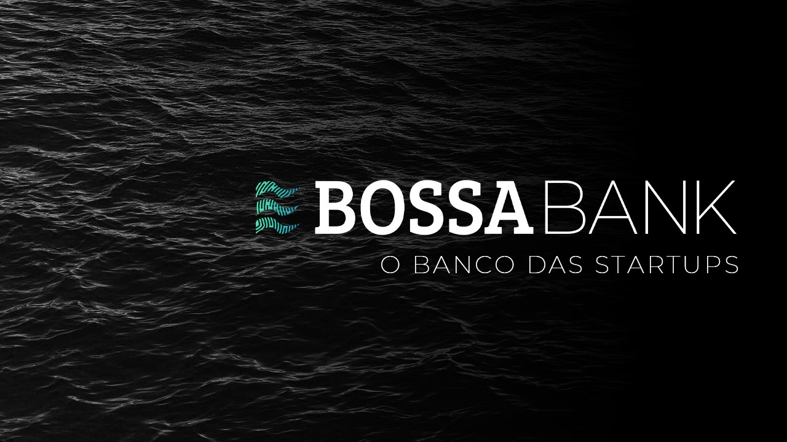
O CONCEITOTHE CONCEPT
E se há pessoas, há história — e toda história deixa marcas, deixa digitais. O símbolo nasce da impressão digital: as linhas formam ondas que lembram a bossa e desenham o “B” da marca. A ideia é que o banco deixe a sua digital na trajetória de cada startup.And where there are people, there is history — and every story leaves marks, leaves fingerprints. The symbol comes from a fingerprint: its lines form waves that evoke bossa and draw the brand's “B”. The idea is for the bank to leave its fingerprint on every startup's journey.
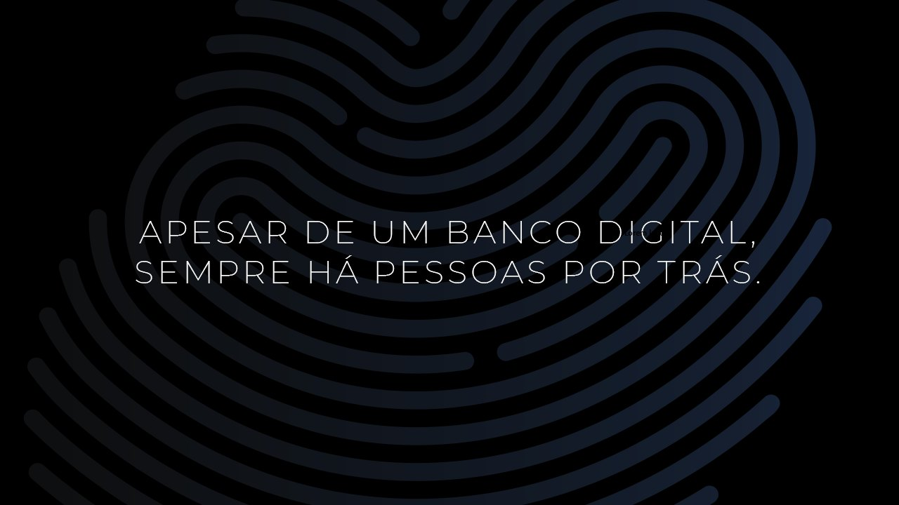
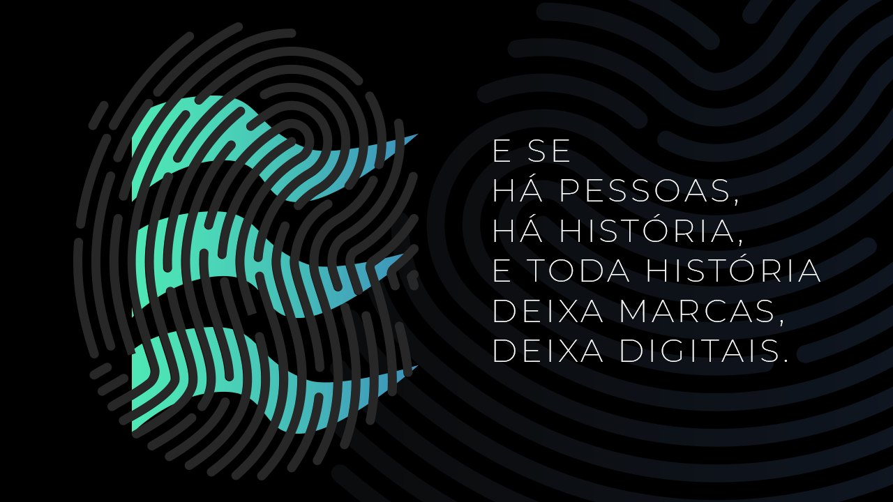
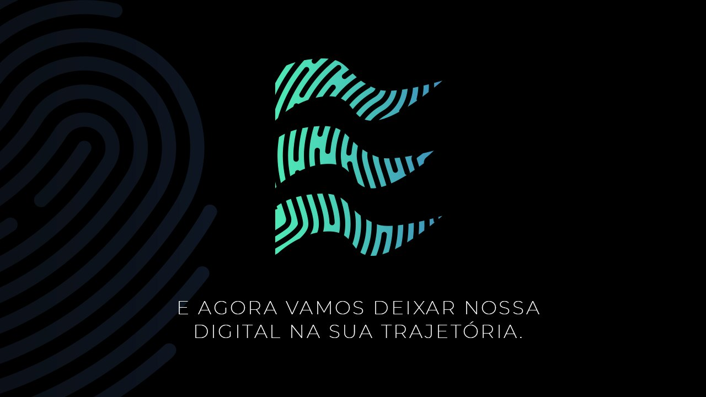
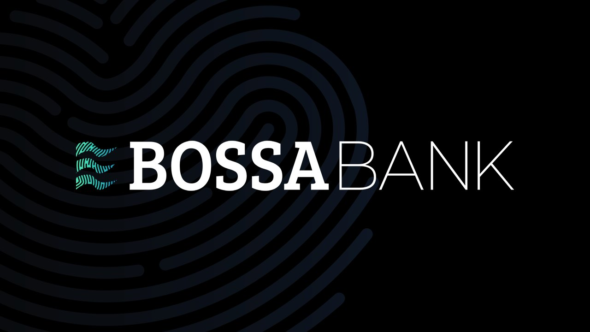
AS CORESTHE COLORS
Verde-água e dois azuis sobre preto e branco. Cada cor foi checada nas simulações de protanopia, deuteranopia e tritanopia, para manter contraste e leitura para pessoas daltônicas.Aqua green and two blues over black and white. Each color was checked in protanopia, deuteranopia and tritanopia simulations to keep contrast and legibility for color-blind people.
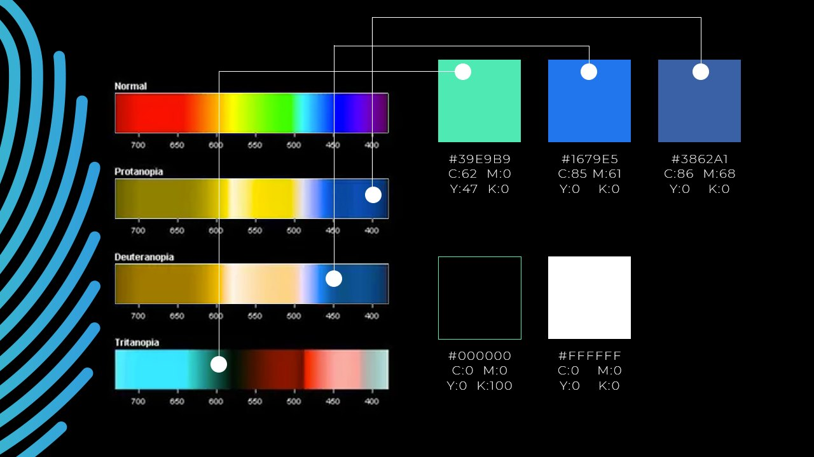
Interface do app com Pix, pagamentos, cobranças e transferências à mão, e cartões que levam a digital da marca.An app interface with Pix, payments, charges and transfers at hand, and cards that carry the brand's fingerprint.
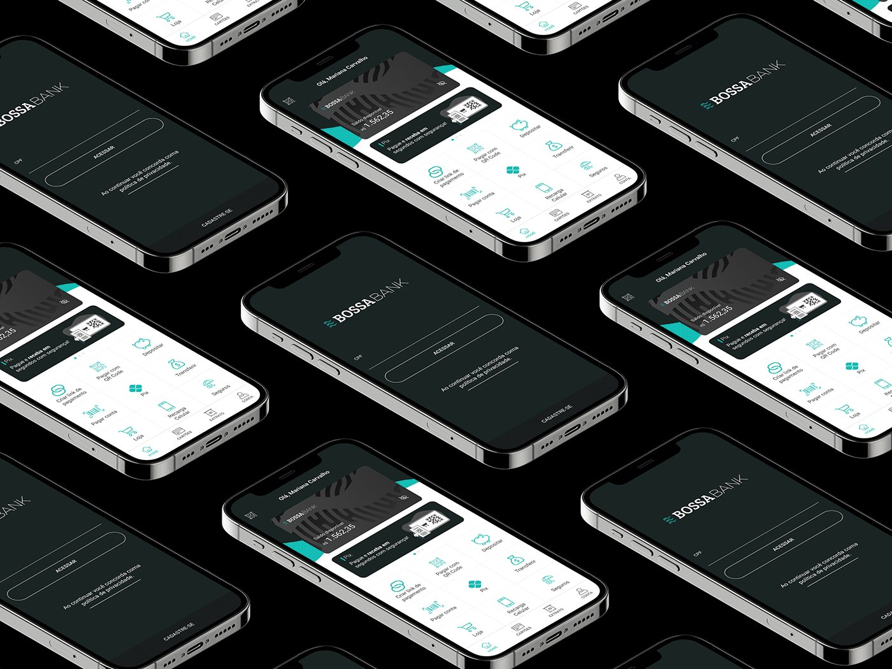
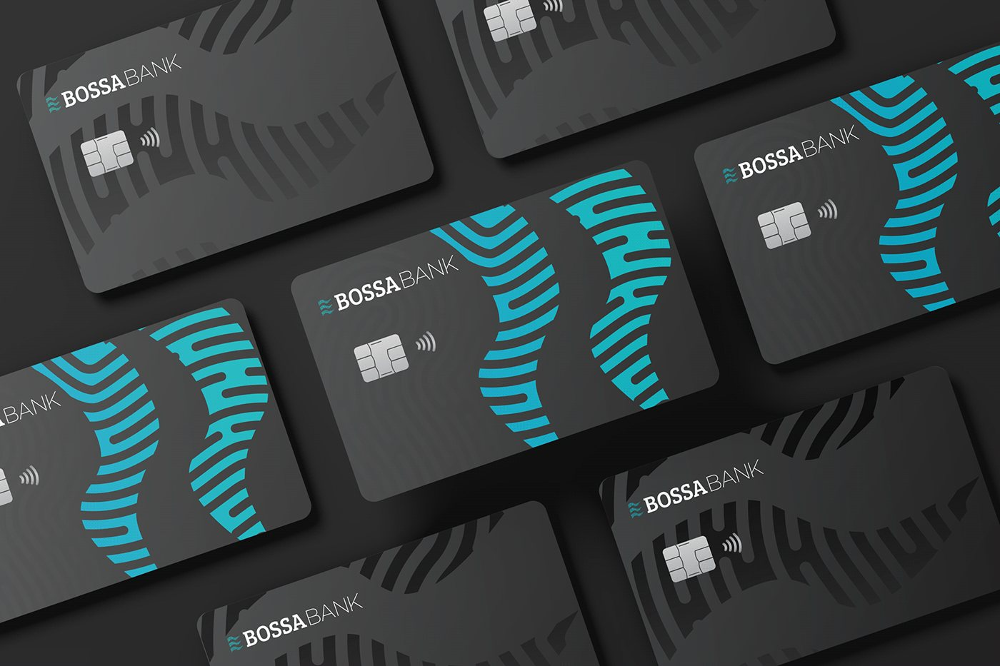
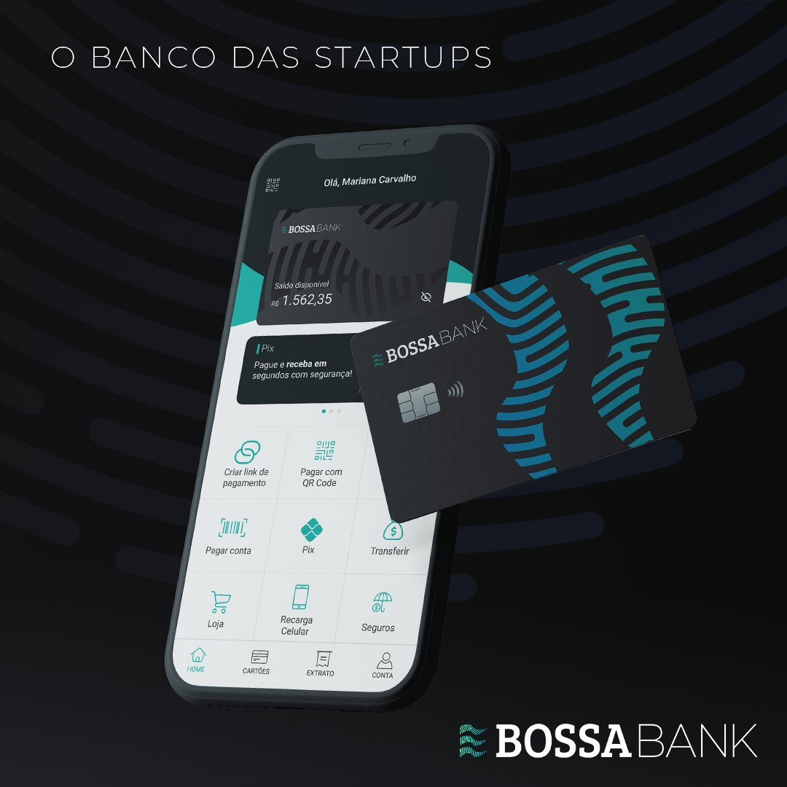
FLUXOFLOW
Um caminho curto para quem deixa dinheiro parado na conta: o app percebe o saldo disponível, mostra quanto ele poderia render, deixa simular o valor e confirma a aplicação em poucos toques — com resgate quando quiser.A short path for people who leave money sitting in their account: the app notices the available balance, shows how much it could earn, lets you simulate the amount and confirms the investment in a few taps — with withdrawals anytime.
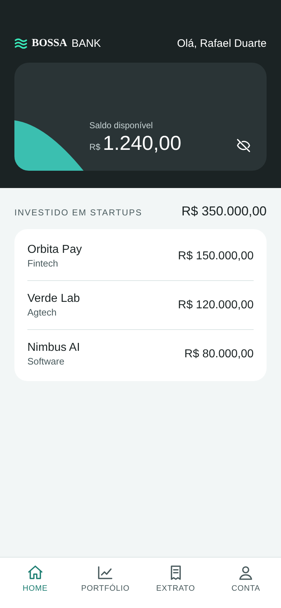
01 · HOME
Saldo e investimentos em startups lado a lado.Balance and startup investments side by side.
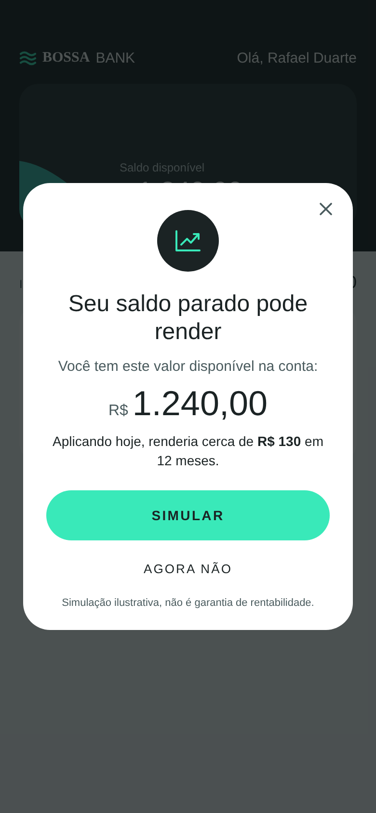
02 · CONVITE02 · PROMPT
Um aviso claro, com a estimativa em reais e saída fácil.A clear prompt, with the estimate in reais and an easy way out.
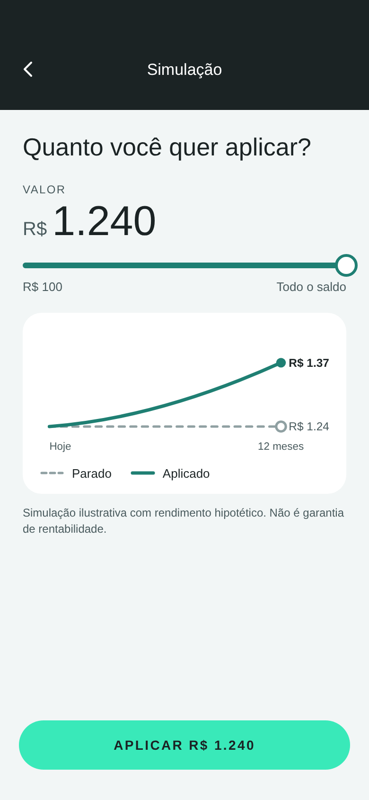
03 · SIMULAÇÃO03 · SIMULATION
Escolha do valor e o comparativo parado × aplicado.Pick the amount and compare idle × invested.
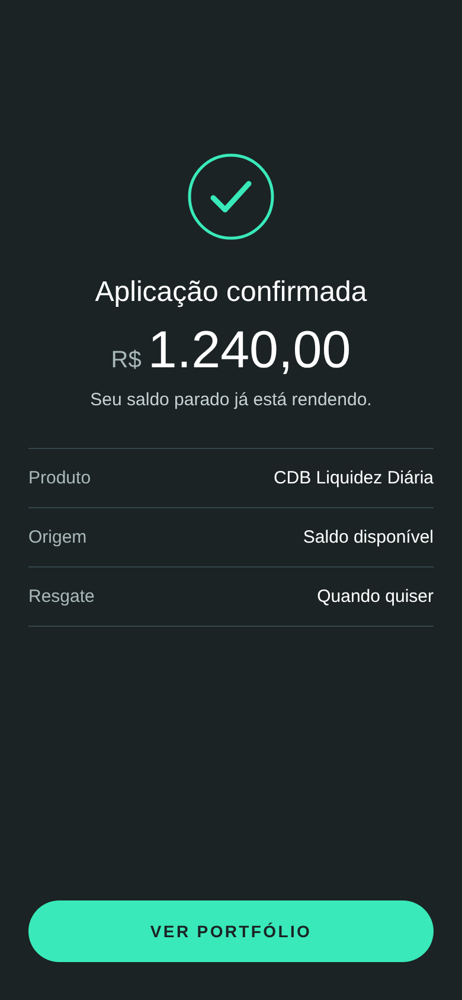
04 · CONFIRMAÇÃO04 · CONFIRMATION
Resumo do produto, origem e resgate.Summary of product, source and withdrawal.